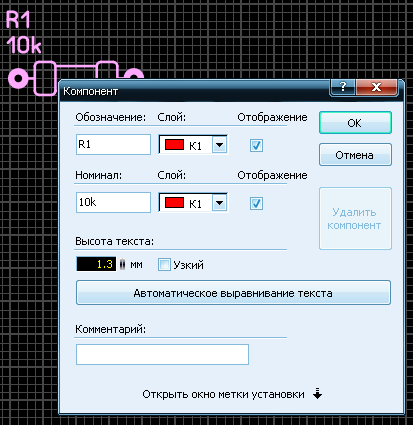
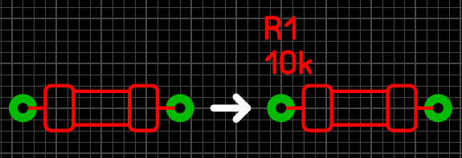
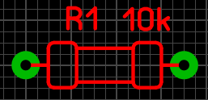
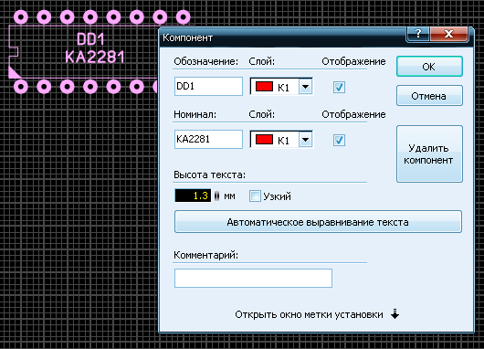
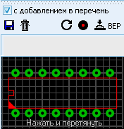
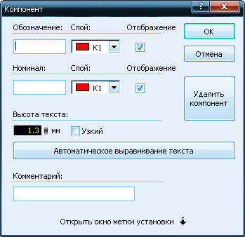
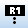
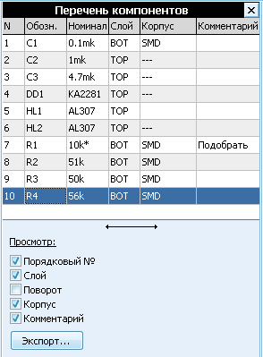

Sprint-Layout 6. Компоненты
Понятие компонента в программе Sprint-Layout 6 практически эквивалентено понятию макроса. Компонент содержит сгруппированные элементы, но дополнительно в его состав входят специфические данные, которые позволяют Sprint-Layout оперировать именно таким понятием. Sprint-Layout может создавать перечень компонентов (лист спецификации), а также файл установки компонентов на плату для автоматической линии монтажа.
Создание компонента
Любой макрос, элемент или несколько элементов могут быть преобразованы в компонент. Для преобразования в компонент следует по макросу (элементу или выделенной группе элементов) щелкнуть правой кнопкой мышки и в появившемся контекстном меню выбрать Компонент... При этом откроется диалоговое окно:

Каждый компонент может иметь два идентификатора:Обозначение (схемное) и Номинал. Эти данные следует внести в соответствующие поля.
Как правило, идентификаторы наносятся на слой шелкографии, но по желанию можно выбрать любой.
Необходимость отображения идентификаторов определяется разработчиком. Тем не менее, даже при отказе от отображения, идентификаторы будут внесены в перечень компонентов.
При нажатии на кнопку Автоматическое выравнивание текста, при эволюциях компонента на плате оба идентификатора будут занимать положение, удобное для чтения.
После нажатия кнопки OK происходит преобразование:

Пример преобразования макроса в компонент
Если у компонента присутствует Метка установки, на рабочем поле она отображается небольшим белым перекрестием.
Обозначение и Номинал можно перемещать по плате относительно компонента. Для этого следует навести курсор на идентификатор, нажать левую кнопку мышки и, не отпуская ее, переместить идентификатор в требуемое положение. При дальнейших перемещениях по плате компонента, идентификаторы будут сохранять свое относительное положение.

Для редактирования компонента диалоговое окно может быть вызвано в любой момент. Для этого следует произвести двойной щелчок по выбранному компоненту или, щелкнув по нему правой кнопкой мышки, выбрать в контекстном меню Компонент...
Удаление компонента
В любое время выбранный компонент может быть удален. При этом он теряет особенности компонента (идентификаторы), исчезает из перечня компонентов и превращается в обычный макрос. Для этой операции в диалоговом окне достаточно нажать на кнопку Удалить компонент.
Изменение/ Удаление компонентов
Изменение существующего компонента
Для внесения изменений в данные компонента следует вызвать на экран соответствующее диалоговое окно. Для этого следует произвести двойной щелчок по выбранному компоненту или, щелкнув по нему правой кнопкой мышки, выбрать в контекстном меню Компонент...

Совет:
Допускается выделение и редактирование некоторых параметров одновременно у нескольких компонентов. Для этого следует произвести выделение требуемых компонентов и двойным щелчком по одному из них вызвать диалоговое окно. Идентификатор компонента, по которому был произведен двойной щелчок, будет выделен синим цветом. После этого можно изменить, например, высоту шрифта идентификаторов у всех выделенных компонентов одновременно.
Удаление компонента
В любое время выбранный компонент может быть удален. При этом он теряет особенности компонента (идентификаторы), исчезает из перечня компонентов и превращается в обычный макрос.
Для удаления компонента следует нажать кнопку Удалить компонент.
Компоненты в библиотеке
При добавлении в проект объекта из библиотеки, его можно установить как обычный макрос или как компонент.
Если требуется установка объекта в качестве компонента, следует установить разрешение на с добавлением в перечень.

В этом случае любой макрос может быть установлен на рабочее поле со свойствами компонента. При переносе макроса с этим разрешением на плату, автоматически откроется диалоговое окно:

Редактирование в библиотеке
Созданные компоненты могут быть занесены в библиотеку со своими идентификаторами. При этом идентификатор будет доступен для редактирования непосредственно в библиотеке. Для этого следует в окне просмотра библиотеки произвести двойной щелчок по выбранному идентификатору. Откроется диалоговое окно, в котором можно внести соответствующие изменения. При установке компонента из библиотеки, рядом с ним будут появляться его идентификаторы. Если компонент не требуется как таковой, следует снять разрешение на добавление в перечень.
Перечень компонентов
Sprint-Layout создает перечень компонентов, входящих в состав разработки платы.
Для просмотра и редактирования перечня компонентов следует произвести щелчок левой кнопкой мышки по соответствующему значку на панели инструментов:

Панель перечня компонентов открывается в правой части окна программы:

В этом перечне содержатся все компоненты, используемые в разработке.
При выделении компонента в перечне происходит его автоматическое выделение на рабочем поле. Соответственно, при выделении компонента на рабочем поле произойдет его выделение в перечне.
Двойной щелчок по компоненту в перечне вызывает диалоговое окно для редактирования выбранного компонента.
В нижней части панели перечня компонентов находится список разрешения отображения колонок параметров компонента.
Щелчком по горизонтальной двойной стрелке, расположенной ниже перечня, производится автоматическое изменение ширины панели.
Совет: При необходимости изменения ширины панели вручную, следует навести курсор на левую границу панели и, как только он преобразуется в двойную стрелку, нажать левую кнопку мышки и, перемещая ее в требуемом направлении, изменить ширину панели.